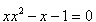
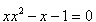

4.4. Sabit Nokta İterasyonu
Kökü bulunacak bir f(x) fonksiyonu yeniden düzenlenerek,şu biçime dönüştürülebilir.
Böylece (4.5) ifadesi, aşağıdaki şekilde yaklaşık kökler ardı ardına hesaplanabilir.

Örneğin,  denklemini, biçiminde yazarak, buradan x elde edilebilir.
denklemini, biçiminde yazarak, buradan x elde edilebilir.
Bu durumda, xk=g(xk-1) biçiminde yazılabilir:

Bu bağıntı söz konusu fonksiyonun köklerinin bulunmasında kullanılır.